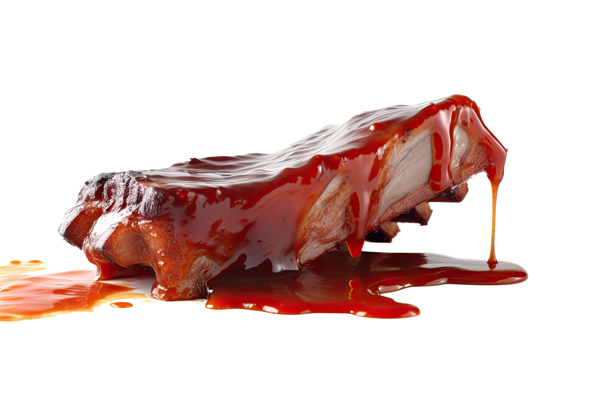

Avocado toast is a modern classic, loved for its creamy texture and health benefits. Packed with healthy fats, fiber, and vitamins, it’s a quick and nutritious meal. Customize it with toppings like tomatoes, radishes, or seeds for extra flavor. Want to try making your own classic BBQ ribs at home? Follow this simple step-by-step recipe:
How to Make Avocado Toast
Ingredients:
- 1 ripe avocado
- 2 slices of whole-grain bread
- 1 tbsp lemon juice
- 1/2 tsp salt
- 1/4 tsp black pepper
- 1/4 tsp red pepper flakes (optional)
- Cherry tomatoes, radishes, or seeds for topping (optional)
Instructions:
1. Toast the Bread:
Toast the slices of bread until golden and crispy.
2. Mash the Avocado:
In a bowl, mash the avocado with lemon juice, salt, and black pepper.
3. Assemble the Toast:
Spread the mashed avocado evenly on the toasted bread.
4. Add Toppings (Optional):
Top with cherry tomatoes, radishes, seeds, or a sprinkle of red pepper flakes for extra flavor.
5. Serve and Enjoy:
Enjoy immediately as a healthy breakfast or snack.